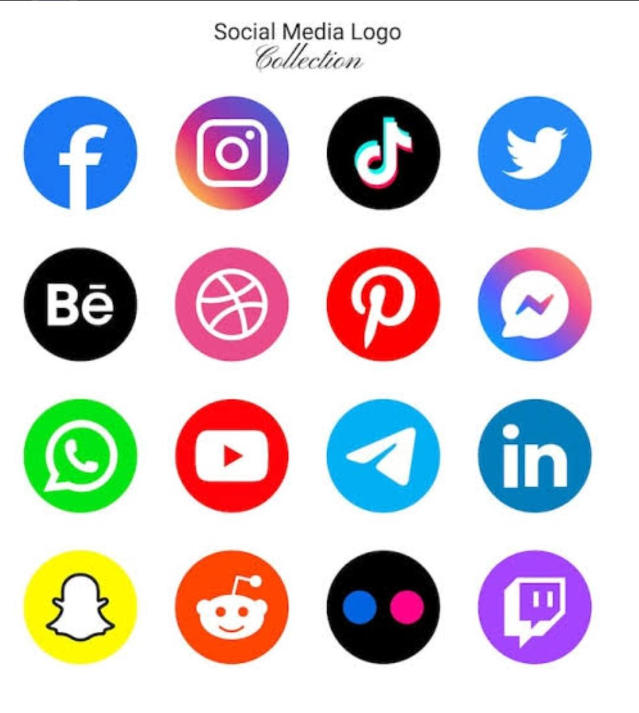
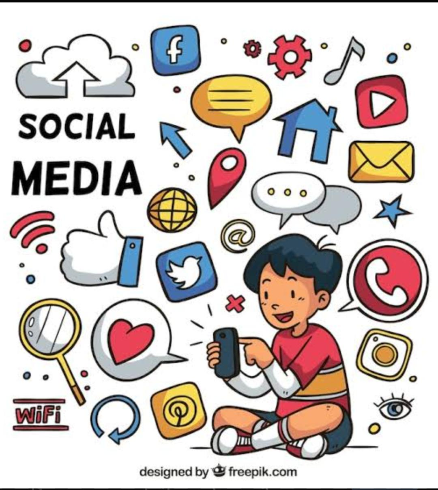

Inicio
Las redes sociales son plataformas digitales que permiten a las personas comunicarse, compartir contenido y mantenerse conectadas en tiempo real desde cualquier parte del mundo.
Conectando al mundo digital
Las redes sociales son plataformas digitales que permiten a las personas comunicarse, compartir contenido y mantenerse conectadas en tiempo real desde cualquier parte del mundo.

Son aplicaciones o sitios web que permiten crear perfiles, interactuar con otros usuarios, compartir publicaciones, fotos, videos y mensajes.

Algunas redes sociales populares son Facebook, Instagram, TikTok, WhatsApp y Twitter (X), utilizadas por millones de personas en todo el mundo.
Las redes sociales destacan por su contenido visual como fotos, historias y videos que permiten una comunicación más dinámica.
Las redes sociales son una herramienta muy útil para la comunicación y el entretenimiento, pero deben utilizarse de forma responsable para evitar problemas como la desinformación o la pérdida de privacidad.